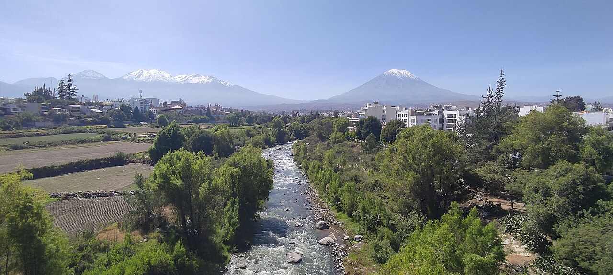

En el territorioPaisaje referencial del río Chili · Crédito fotográfico
ComunidadJulio 2024
Una jornada por el río Chili
Miembros de RUA acompañaron a estudiantes y organizaciones en una jornada de limpieza en Tiabaya. Un esfuerzo compartido por el cuidado del entorno.
Leer la historia en UNSA (abre en otra pestaña)ENUMAIdeas para un futuro verde
Encuentro universitarioComposición editorial · ENUMA 2025
Educación y liderazgo2025
Universidad y ambiente, en una misma conversación
La UNSA anunció ENUMA 2025, organizado por RUA Perú en Arequipa, nodos UNSA y UCSM, como un espacio de educación, investigación y proyectos ambientales.
Conocer el encuentro en UNSA (abre en otra pestaña)